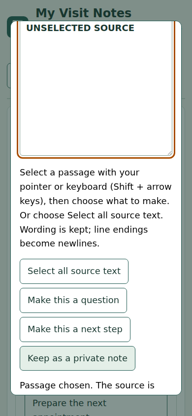
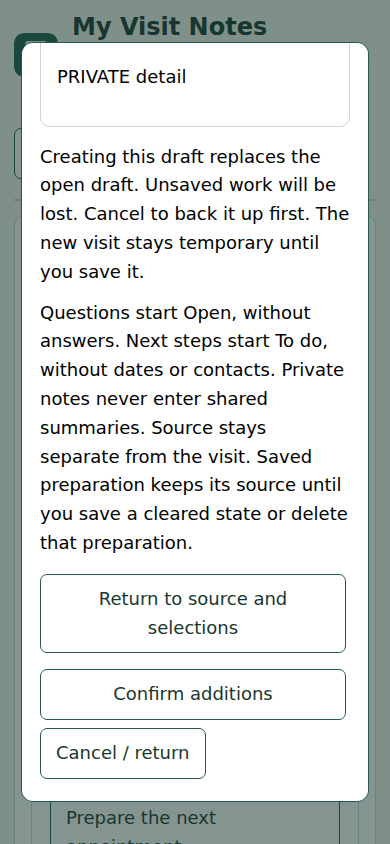

1 / 12
The decision
Extend My Visit Notes with a way to bring in existing written notes. Keep the scope small enough to explain: the person chooses passages and decides whether each becomes a question, a personal next step, or a private note.
This release does not read a document and decide what matters. It does not turn a clinical letter into instructions.
The engineering decision is to build this complete, private text workflow. Whether it saves people effort remains an open question.
2 / 12
The problem we are testing
People may arrive with notes already written elsewhere. Re-entering useful parts can add work, while copying everything can bring irrelevant or private detail into the wrong place.
This is the rationale for the feature, not a prevalence estimate or a newly verified research finding. No participant comparison has established that this flow is easier than ordinary copy and paste.
The broader project looked at communication and reading barriers. This product responds to one specific task rather than claiming to solve a diagnosis.
3 / 12
A concrete example
A fictional person has three lines: “What happens at the next visit?”, “Ask the office for the address”, and a private family detail.
They choose the first as a question, the second as a personal next step, and the third as a private note. They review the exact words before adding them. The app does not rewrite the statements or infer an answer.
In the appointment, they can show the question. Later, they may choose to share the next step. The private detail stays out of the summary.
4 / 12
The complete path
- Paste text or open a UTF-8 .txt file.
- Select a passage, using the keyboard, pointer, or Select all source text.
- Choose its type. Edit or remove chosen items if needed.
- Choose a new, open, or saved visit.
- Review exact additions and matching text.
- Confirm, then edit, save, use offline, share selected content, and keep a backup.
Opening, selecting and reviewing do not write anything into a visit.
5 / 12
Choose words, keep control
Each chosen passage is a separate copy of the selected wording. Changing the source does not silently change earlier choices. Replacing a source file asks first and preserves the chosen list.
There are no suggested medical actions, priority scores, diagnosis guesses or automatic dates. A “next step” means the person's own note, not an instruction approved by a clinician.

6 / 12
Review before adding
The review names the destination and shows the complete text of every item. Matching text is skipped by default. A separate checkbox permits an intentional duplicate.
Matching ignores whitespace differences, not meaning. It checks existing questions and next steps, passages within private preparation notes, and repeated choices in the batch. Nothing already in the destination is deleted.

7 / 12
Three destinations, three clear results
| Choice | Result |
|---|---|
| New temporary visit | Creates a new draft. Warns before replacing open work. Saving remains a separate choice. |
| Open visit | Preserves current edits and appends chosen passages. An already saved visit uses normal automatic saving. |
| Another saved visit | Saves additions to that record while leaving the open draft alone. A changed destination or failed write is not overwritten. |
Questions start Open with no answer. Next steps start To do with no date or contact. Private passages append after a blank line.
8 / 12
What is kept, and where
| Content | Where it stays |
|---|---|
| Source and unconfirmed choices | Only in the open page's memory. Not in visit backups. Reloading or closing loses them. |
| Confirmed visit content | In the temporary draft, or the browser after saving. Full backups include private notes. |
| Shared summary | Only the selected content. Private preparation notes are excluded. |
The source-text download contains the source, not separate edits to chosen items. Files are unencrypted. “Private” does not protect from someone looking at the device or from browser extensions.
9 / 12
When something goes wrong
Invalid text files are refused without replacing source or selections. Stale saved-visit reviews cannot overwrite newer data. Repeated clicks must not apply a batch twice.
If saving the open visit fails, the updated draft remains available for a full backup. If writing another saved visit fails, that record remains unchanged and the selection remains available for review.
The source and chosen list can be cleared separately from saved visits. Cancelling the clear keeps them. The app requests a browser leave warning while temporary intake work remains.
10 / 12
Evidence, not promises
12/12 existing-notes browser scenarios passed in the recorded run. Browser script errors: 0. The full model report contains 100 passing tests.
- IN-01: Choose, review, save, reopen offline; source excluded and private summary boundary — passed
- IN-02: Duplicate defaults, deliberate duplicate, cancellation and preserved open content — passed
- IN-03: Text file validation and source replacement leave chosen passages intact — passed
- IN-04: Append to another saved visit without replacing the open draft — passed
- IN-05: Failed saved-target write is atomic and retains selections; retry adds once — passed
- IN-06: Failed open-visit autosave retains recoverable additions without repeating the batch — passed
- IN-07: Another tab invalidates a saved-target preview instead of overwriting newer work — passed
- IN-08: Backup restore and carry-forward retain selected content without copying private notes — passed
- IN-09: Keyboard passage selection, editing, removing, focus return and narrow layout — passed
- IN-10: Private source download, leave warning, clear cancellation and no outbound content — passed
- IN-11: Repeated confirmation adds once; cancelling a locked write prevents late additions — passed
- IN-12: Empty edits, file size limit, partial selection, replacement cancellation and enlarged review — passed
Recorded browser results and source hashes · Requirement-level audit · Repeatable commands and limits
Recorded: 2026-09-16T21:52:27.655Z. These are software checks with fictional content, not participant results.
11 / 12
Limits and deliberate exclusions
The first version accepts UTF-8 .txt files and pasted text up to 1 MiB. It preserves wording; browser line-ending normalization means it is not byte-identical file archiving.
No PDF reading, images, recordings, automatic interpretation, cloud account, remote model or medical advice is included. No public deployment is part of this release.
Phone dimensions are emulated. Physical-phone behavior, screen-reader use and whether people prefer this workflow remain unverified. Participant review is deferred at the user's request, not fabricated.
12 / 12
The product and handoff
The product remains My Visit Notes: prepare questions, keep a place during a conversation, record personal next steps, and decide what to share. Bringing existing notes is an additional entrance to that same workflow, not a separate clinical document product.
Open the app · Detailed new requirements · Full product requirements · Fictional walkthroughs · Build review · Run locally
The next evidence question is whether deliberate selection and review help people prepare without bringing unwanted details into a summary. This release establishes a testable implementation, not the answer.